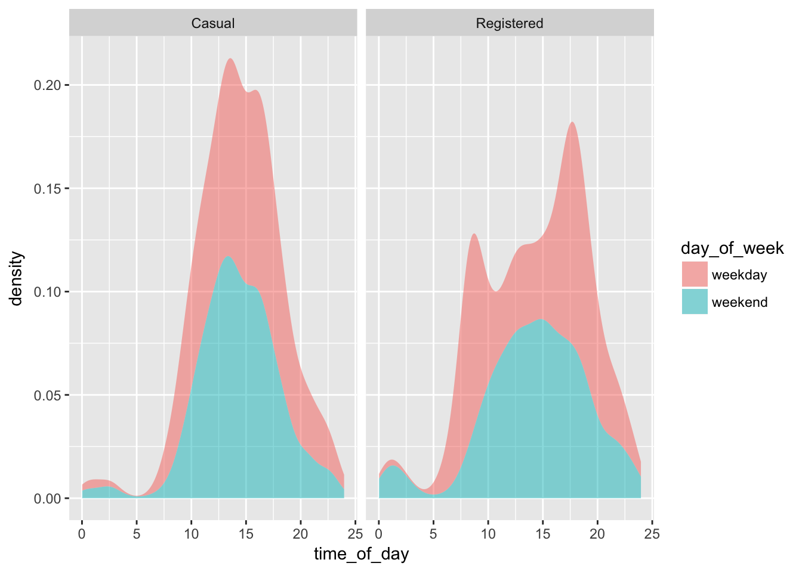

07_Bikes
# attach necessary packages
library(dplyr)
library(lubridate)
library(ggplot2)# Bicycle Rentals
# download data
data_site <-
"http://tiny.cc/dcf/2014-Q4-Trips-History-Data-Small.rds"
Trips <-
readRDS(gzcon(url(data_site)))# check to see if data reasonable
head(Trips)| duration | sdate | sstation | edate | estation | bikeno | client | |
|---|---|---|---|---|---|---|---|
| 344758 | 0h 9m 15s | 2014-11-06 16:26:00 | 15th & L St NW | 2014-11-06 16:35:00 | 15th & L St NW | W00169 | Registered |
| 113251 | 0h 47m 21s | 2014-10-12 11:30:00 | 3rd & D St SE | 2014-10-12 12:17:00 | Jefferson Dr & 14th St SW | W01482 | Registered |
| 633756 | 2h 46m 22s | 2014-12-27 14:24:00 | 10th & E St NW | 2014-12-27 17:10:00 | 10th & E St NW | W21346 | Casual |
| 466862 | 0h 15m 15s | 2014-11-23 16:42:00 | 4th & M St SW | 2014-11-23 16:57:00 | 5th & K St NW | W00647 | Casual |
| 474332 | 0h 18m 33s | 2014-11-24 17:29:00 | 1st & Washington Hospital Center NW | 2014-11-24 17:47:00 | Columbus Circle / Union Station | W21580 | Registered |
| 581597 | 0h 2m 36s | 2014-12-15 13:11:00 | 11th & Kenyon St NW | 2014-12-15 13:14:00 | Park Rd & Holmead Pl NW | W21286 | Registered |
str(Trips)## 'data.frame': 10000 obs. of 7 variables:
## $ duration: chr "0h 9m 15s" "0h 47m 21s" "2h 46m 22s" "0h 15m 15s" ...
## $ sdate : POSIXct, format: "2014-11-06 16:26:00" "2014-10-12 11:30:00" ...
## $ sstation: chr "15th & L St NW" "3rd & D St SE" "10th & E St NW" "4th & M St SW" ...
## $ edate : POSIXct, format: "2014-11-06 16:35:00" "2014-10-12 12:17:00" ...
## $ estation: chr "15th & L St NW" "Jefferson Dr & 14th St SW" "10th & E St NW" "5th & K St NW" ...
## $ bikeno : chr "W00169" "W01482" "W21346" "W00647" ...
## $ client : chr "Registered" "Registered" "Casual" "Casual" ...# density plot of events versus sdate
Trips %>%
ggplot(aes(x = sdate)) +
geom_density()
# density plot of events vs time of day
# first extract hour and minute
TripsDate <-
Trips %>%
mutate(time_of_day = hour(sdate) + minute(sdate) / 60)# density plot of events vs time of day
TripsDate %>%
ggplot(aes(x = time_of_day)) +
geom_density()# facet by day of the week
TripsWeekday <-
TripsDate %>%
mutate(day_of_week = wday(sdate, label = TRUE))TripsWeekday %>%
ggplot(aes(x = time_of_day)) +
geom_density() +
facet_wrap(~ day_of_week)
# set fill aesthetic for geom_density() to the client variable
TripsWeekday %>%
ggplot(aes(x = time_of_day)) +
geom_density(aes(fill = client), color = NA, alpha = 0.5) +
facet_wrap(~ day_of_week)# same as above but useing geom_density() with the argument position = position_stack
TripsWeekday %>%
ggplot(aes(x = time_of_day)) +
geom_density(aes(fill = client), color = NA, alpha = 0.5, position = position_stack()) +
facet_wrap(~ day_of_week)# create new faceting variable
TripsNewFacet <-
TripsWeekday %>%
mutate(day_of_week = ifelse(wday(sdate) %in% c(1,7), "weekend", "weekday"))# density plot with the new facet
TripsNewFacet %>%
ggplot(aes(x = time_of_day)) +
geom_density(aes(fill = client), color = NA, alpha = 0.5, position = position_stack()) +
facet_wrap(~ day_of_week)# better to facet on day_of_week and fill with client or vice versa
TripsNewFacet %>%
ggplot(aes(x = time_of_day)) +
geom_density(aes(fill = day_of_week), color = NA, alpha = 0.5, position = position_stack()) +
facet_wrap(~ client)